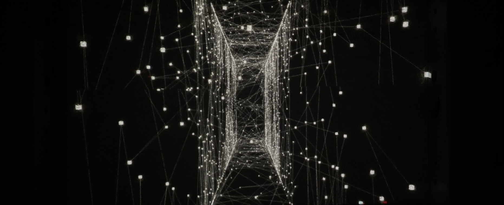
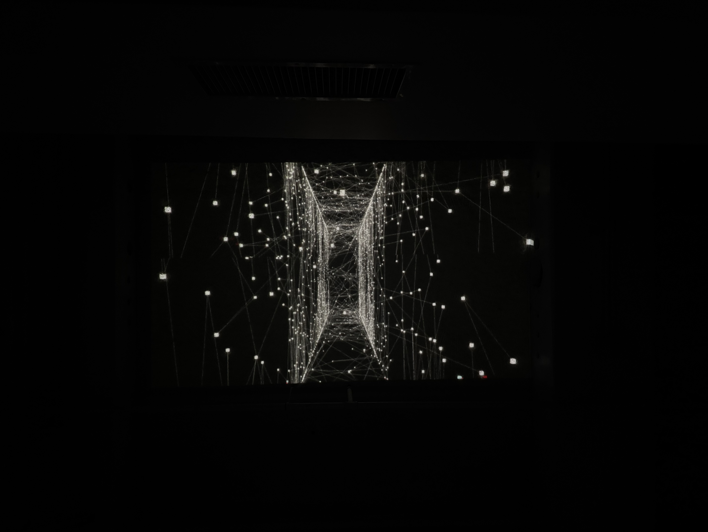
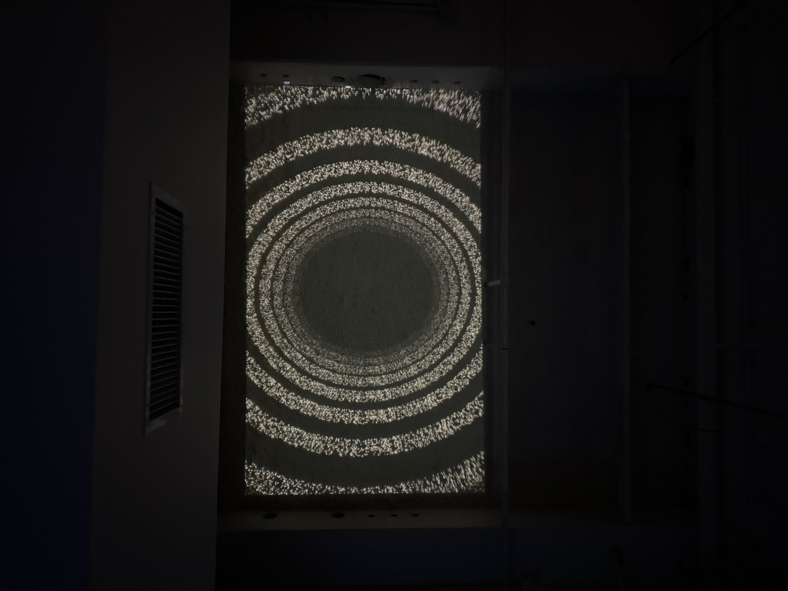
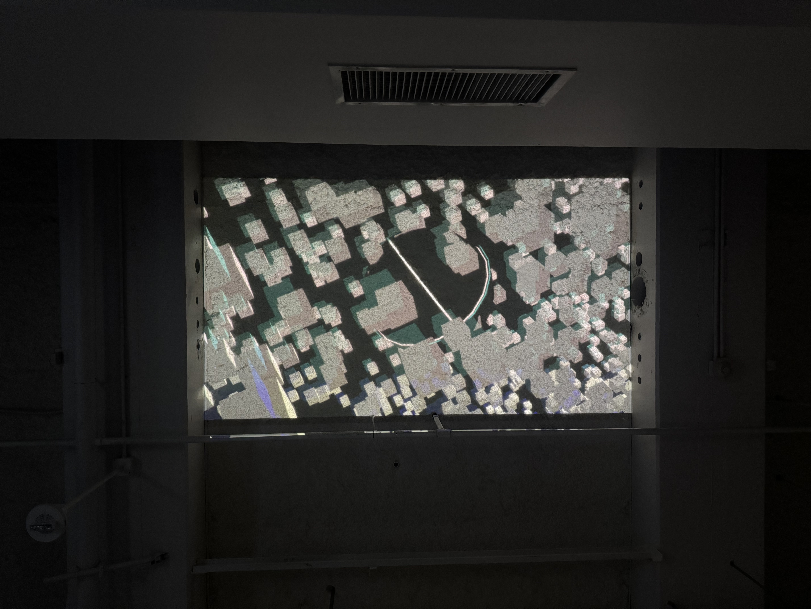
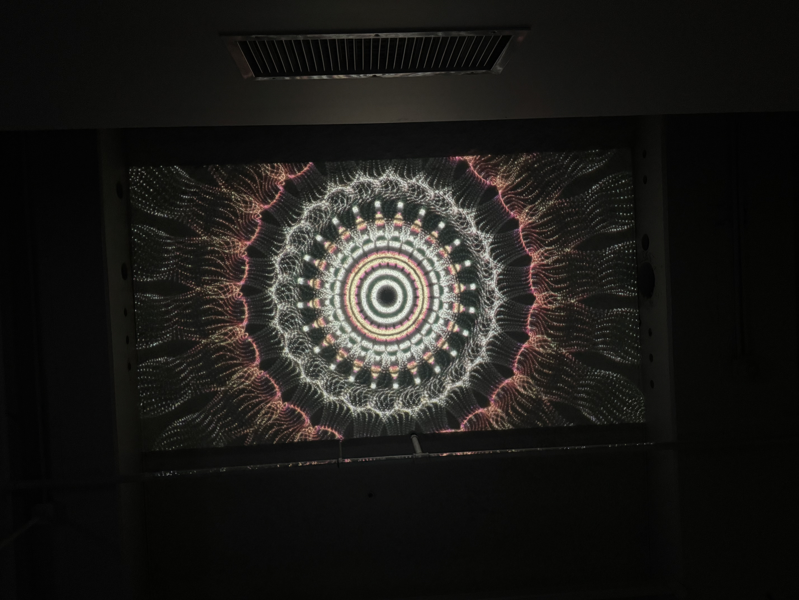
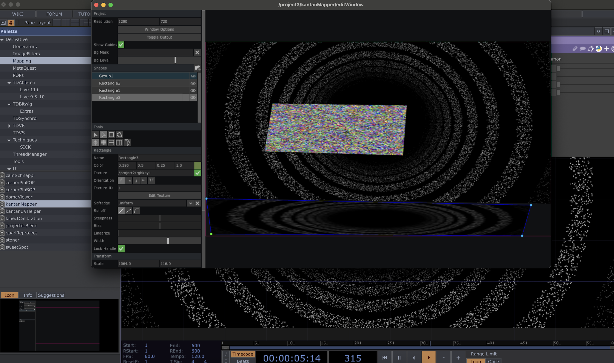

The projection setup was conducted in a darkened classroom environment, using a CASIO projector mounted at an angle toward the wall surface. The darkness of the space proved essential — without ambient light interference, the generative visuals retained their contrast and depth, particularly the black-and-white organic forms and particle-based effects that rely heavily on dark backgrounds to read clearly.
The content selected for projection focused on the tunnel and traversal effects — particle systems and noise-driven geometries that carry a strong sense of forward motion and spatial depth. When scaled up onto a physical wall, these pieces shifted in character noticeably. What appeared as abstract point clouds on a monitor became genuinely immersive at room scale; the sense of moving through space became more visceral, less like watching and more like being inside.
The primary technical challenge encountered was keystone distortion. Because the projector could not be positioned perfectly perpendicular to the wall, the projected image arrived trapezoidal rather than rectangular. This was corrected through the projector's built-in keystone adjustment rather than through software, which introduced a slight reduction in image sharpness at the corrected edges — a trade-off between geometric accuracy and optical clarity. In future setups, kantanMapper's mesh warping would offer a more precise alternative, allowing corner-point adjustments to be made at the software level without degrading the optical path.
Mapping the content to the wall surface through kantanMapper involved defining the projection boundary as a single group, then aligning the four corner points to the physical edges of the intended surface area. The process revealed how differently the same visual material reads depending on scale and surface texture — the classroom wall's slight irregularities added an unintended but interesting material quality to the projected image, making the organic forms appear to exist on the surface rather than simply illuminated against it.